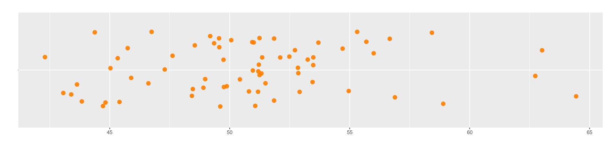
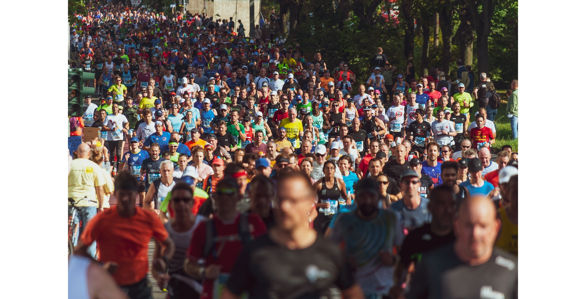
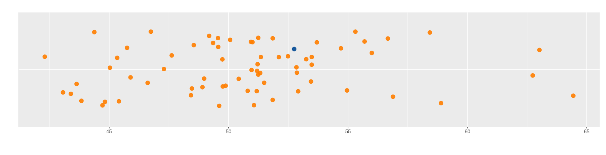
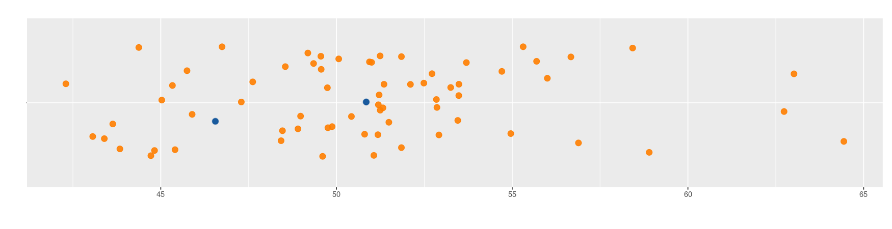
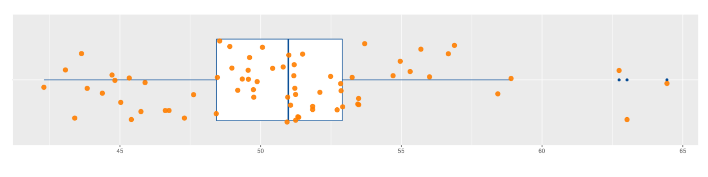

Indicadores de Posición
Nivelatorio de Estadística
2022
Una de las dificultades que se presentan al tratar de interpretar los valores de una variables es el de poder la resumur en uno pocos indicadores que los represente, para lo cual es necesario utilizar indicadores que los caractericen.

Para los datos cuantitativos se pueden utilizar las tablas de frecuencia identificando el valor que más se repite, indicador que se denomina MODA.
Para las variable cuantitativas existen una serie de indicadores que caracterisan y facilitan su analisis como son :
- Indicadores de posición
- Indicadores de centro
- Indicadores de dispersión o variabilidad
- Indicadores de forma
Iniciaremos con los indicadores de posición

La posición final de un atleta en una competencia indica cual es su nivel frente a un grupo de competidores, de igual manera los indicadoreds de posición hacen referencia a la ubicación de un valor frente al grupo. Además del ganador y el último existen un gran número de valores intermedio que nos ayudan en el analisis de un grupo de datos
Los PERCENTILES corresponden a 99 valores que dividen los datos en cien partes de igual porcentaje (\(P_{1}\), \(P_{2}\), \(P_{3}\), \(P_{4}\), \(\cdots\) ,\(P_{99}\)).
Ejemplo 1
Los siguientes datos correspnde a tiempos registrados por 70 atletas dutante una carrera de 10.5 kilómetros obtenidos de manera simulada que nos serviran de apoyo para visualizar y entender los indicadores de posición.
El PERCENTIL 30 (\(P_{30}\)) divide la muestra en dos partes. Por debajo de este valor está el 30% de los datos y por encima de el esta el 70% restante. En este grupo de datos \(P_{30} = 48.96\) y está representado por el punto azul. En contexto uno de los atletas empleó un tiemo de 48.58 minutos. Primero que él llegó el 30% de los competidores, pero le ganó al 70% de los que participaron en la prueba. Esta información le permite compararse rapidamente con el grupo.

El PERCENTIL 75 (\(P_{75}\)), está ubicado de tal forma en la muestra que tiene por debajo un 75% de los datos y por encima un 25%. Para este caso corresponde a \(P_{75} = 52.90\), prepresentado en la siguiente gráfica por un punto azul. Este punto representa el tiempo empleado por un corredor que marcó un tiempo de 52.54 min y solo le ganó al 30% de los corredores que gastaron más tiempo en culminar la carrera.

Tambien existen los DECILES que corresponden a 9 número que dividen la muestra en 10 partes, cada una con un 10% de la muestra (\(D_{1}, D_{2}, D_{3}, D_{4}, \cdots , D_{9}\))
Ejemplo 2
- El DECIL 2 (\(D_{2}\)), tiene por debajo del el, el 20% de los datos
- El DECIL 5 (\(D_{5}\)), por debajo de este número se encuentra el 50% de los datos

En este caso corresponde a : \(D_{2} = 46.72\) y \(D_{5} = 50.98\) . Si suponemos que solo el 20% de los corredores con mejor tiempo seran seleccionados para otro evento, entoces los corredores con tiempo inferiores a \(D_{2}\) = \(P_{20} = 46.43\) minutos estarían seleccionados.
Y finalmente los CUARTILES que corresponden a 3 números que dividen la muestra en cuatro partes de igual porcentaje (\(Q_{1}\), \(Q_{2}\), \(Q_{3}\)), con los cuales se construye los diagrámas de cajas que permiten poder detectar datos atípicos
Ejemplo 3

En este caso los cuartiles \(Q_1 = 46.72\), \(Q_2 = 50.98\) y \(Q_3 = 52.90\), estan representados por las lineas verticales que conforman la caja. La linea central de la caja representa a \(Q_{2}\) y divide los datos en dos parte de igual porcentaje (50% | 50%). Los puntos azules ubicados a derecha del gráfico representan datos atípicos que deben ser objeto de estudio por separado para determinar sus causas en unos casos y de exclusión en otros casos para evitar que causen desvios en los indicadores
Código R
Los percentiles pueden ser calculados mediante la función
quantile() . El siguiente código ilustra la obtención de
los cuartiles
x=c(51.35, 49.88, 49.35, 51.21, 51.24, 45.75, 48.42, 47.29, 48.98, 50.06, 50.94, 45.41, 55.69, 48.90, 56.00, 44.72, 56.89, 46.61, 53.25, 48.46, 49.74, 45.03, 63.02, 50.96, 50.43, 51.19, 53.45, 52.10, 49.61, 45.89, 49.76, 42.30, 53.48, 54.71, 53.48, 56.67, 44.38, 51.18, 51.06, 54.96, 64.44, 51.85, 45.33, 62.74, 43.84, 51.32, 53.70, 51.00, 52.86, 43.06, 43.63, 51.24, 52.84, 49.19, 49.56, 49.56, 51.49, 55.31, 46.74, 47.62, 51.85, 58.90, 50.80, 43.39, 48.54, 52.72, 44.82, 52.49, 58.43, 52.91)
quantile(x, c(0.25,0.50,0.75))